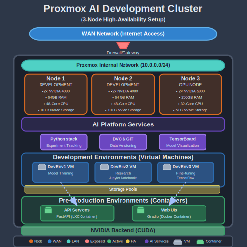

Demostrador de Inteligencia Artificial Educativo
Visión general
Plataforma integral de inteligencia artificial diseñada como entorno educativo de alto rendimiento para 10 alumnos, proporcionando una infraestructura completa que simula escenarios reales de desarrollo, preproducción y producción de sistemas IA.
Colaboradores
Centros colaboradores
| Profesor | Centro |
|---|---|
| Daniel Espiñeira | IES Fernando Writz (Lider) |
| Mikel Díez | CF Somorrostro |
Empresas Colaboradoras
- Roiward
- Dative
Capacidades clave
- Entorno multi-usuario: Soporte para 10 alumnos trabajando simultáneamente
- Recursos computacionales escalables: Potencia de cálculo dedicada para entrenamientos complejos
- Arquitectura multi-entorno: Simulación real de ciclos de desarrollo profesionales
- Infraestructura de vanguardia: Hardware especializado para cargas de trabajo IA
Stack tecnológico
Infraestructura y virtualización
- Proxmox VE: Hipervisor para orquestar entornos virtualizados
- Linux (Ubuntu/Debian): Sistema operativo base optimizado
- Docker/Kubernetes: Contenedores para despliegue consistente
- NVIDIA CUDA: Aceleración GPU para procesamiento paralelo
Desarrollo IA
- Python: Lenguaje principal para desarrollo
- PyTorch/TensorFlow: Frameworks de aprendizaje profundo
- Hugging Face Transformers: Biblioteca para modelos de lenguaje
- NVIDIA TensorRT: Optimización de inferencia
- OpenCV/MediaPipe: Procesamiento y análisis de imágenes
- Langchain/LlamaIndex: Integración de modelos de lenguaje
MLOps
- MLflow: Gestión del ciclo de vida de modelos
- Git/Gitlab: Control de versiones para datos
- Weights & Biases: Seguimiento de experimentos
- FastAPI/Flask: APIs para servicios de modelos
Almacenamiento y datos
- PostgreSQL/MongoDB: Bases de datos para aplicaciones
- MinIO/S3: Almacenamiento de objetos
- Redis: Caché de alta velocidad
Monitorización
- Prometheus/Grafana: Supervisión de rendimiento
- ELK Stack: Análisis de logs y eventos
Diagrama General

Recursos
Repositorios
Repositorios
| Repositorio | Descripción |
|---|---|
| demo-ia-infra | Infraestructura y configuración del sistema |
| demo-ia-mlops | Herramientas y flujos MLOps |
| demo-ia-apps | Aplicaciones y casos de uso |
| demo-ia-docs | Documentación del proyecto |
Estos repos se pueden encontrar dentro del proyecto
Documentacion
📄 Descargar documentación completa en PDF
Casos de uso
- Desarrollo de aplicaciones de IA generativa (texto, imagen)
- Sistemas de visión artificial y reconocimiento de objetos
- Procesamiento de lenguaje natural y chatbots
- Despliegue y monitorización de modelos en producción
- Optimización de rendimiento para inferencia en tiempo real